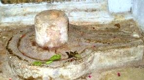

<?xml version="1.0" encoding="UTF-8"?><rss version="2.0"
	xmlns:content="http://purl.org/rss/1.0/modules/content/"
	xmlns:wfw="http://wellformedweb.org/CommentAPI/"
	xmlns:dc="http://purl.org/dc/elements/1.1/"
	xmlns:atom="http://www.w3.org/2005/Atom"
	xmlns:sy="http://purl.org/rss/1.0/modules/syndication/"
	xmlns:slash="http://purl.org/rss/1.0/modules/slash/"
	>

<channel>
	<title>Yagya Valkeshwar &#8211; Varanasi Temples</title>
	<atom:link href="index.html" rel="self" type="application/rss+xml" />
	<link>../../../../../index.html</link>
	<description>Temples of Varanasi as referred to in Kashi Khand</description>
	<lastBuildDate>Thu, 19 Jun 2025 05:16:46 +0000</lastBuildDate>
	<language>en-US</language>
	<sy:updatePeriod>hourly</sy:updatePeriod>
	<sy:updateFrequency>1</sy:updateFrequency>
	<generator>https://wordpress.org/?v=4.6.29</generator>
	<item>
		<title>YAGYA VALKESHWAR</title>
		<link>../../../../../shiva-temples/yagya-valkeshwar/index.html</link>
		<pubDate>Mon, 10 May 2010 15:55:06 +0000</pubDate>
		<dc:creator><![CDATA[admin]]></dc:creator>
				<category><![CDATA[Other Shiva Temples (S-Y)]]></category>
		<category><![CDATA[Shiva Temples]]></category>
		<category><![CDATA[Yagya Valkeshwar]]></category>

		<guid isPermaLink="false">../../../../../p=448.html</guid>
		<description><![CDATA[On the request by Goddess Parvati, Lord Shiva narrated the various deities/ Shiv Lings/Teerths (Sacred Ponds) spread over the expanse of Kashi. (Kashi Khand, Chapter 97). Towards the south of Krishneshwar is a Shiv Ling known as Yagya Valkeshwar. Devotees who worship Yagya Valkeshwar will be blessed with increase in Brahma Tejas (radiating energy for [&#8230;]]]></description>
				<content:encoded><![CDATA[<p>On the request by Goddess Parvati, Lord Shiva narrated the various deities/ Shiv Lings/Teerths (Sacred Ponds) spread over the expanse of Kashi. (Kashi Khand, Chapter 97).</p>
<p>Towards the south of Krishneshwar is a Shiv Ling known as Yagya Valkeshwar. Devotees who worship Yagya Valkeshwar will be blessed with increase in Brahma Tejas (radiating energy for students).</p>
<p></p>
<p style="text-align: center;"><strong>(YAGYA VALKESHWAR)</strong></p>
<p>This Ling is supposed to have been installed by Sage Yagya Valkya.</p>
<p><strong><span style="text-decoration: underline;">LOCATION OF YAGYA VALKESHWAR</span></strong></p>
<p>Yagya Valkeshwar is located next to Krishneshwar at No. Ck.7/159. The Shiv Ling is facing the east and is in the corner of the building.  Devotees can reach this place by travelling upto Chowk by rickshaw and walking on foot via Sankata Devi temple (famous landmark). Alternatively, they can take a boat ride upto Sankata Ghat and climb the steps.</p>
<p>&nbsp;</p>
<p><strong>Please watch our YouTube Video about Yagya Valkeshwar at following Link</strong></p>
<p>&nbsp;</p>
<p><a href="https://www.youtube.com/watch?v=JT9nJF6YNjE&amp;t=8s">https://www.youtube.com/watch?v=JT9nJF6YNjE&amp;t=8s</a></p>
<p>&nbsp;</p>
<p><strong><span style="text-decoration: underline;">TYPE OF POOJA</span></strong></p>
<p>This place of worship is open throughout and devotees can perform pooja by themselves.</p>
]]></content:encoded>
			</item>
	</channel>
</rss>
